Телеграмм бот предназначен для проверки лиц по базе данных, получаемой в результате парсинга сайта
nemezida.ru.
Сервис работает как с прямыми запросами, так и в автономном
режиме в случает отсутствия соединения с ресурсом. Настоящая инструкция описывает как общие правила построения
запросов и доступный функционал, так и сам механизм парсинга.
Тут же предусмотрена удобная система навигации по документу.
Для получения наиболее точных результатов рекомендую полностью изучить инструкцию.
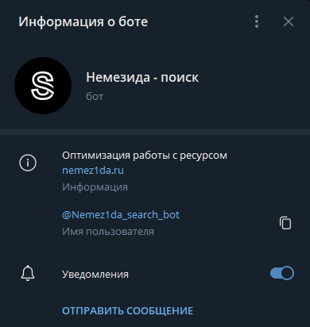
Хендлеры
Для удобства работы существует четыре основных хендлера. Ниже вы найдете подробное описание каждого из них.
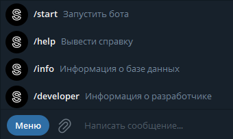
/start — Запустить бота
Базовый хендлер, запускающий бота при первом знакомстве, выводит приветственное сообщение, предлагая открыть
и изучить инструкцию (что собственно вы уже и делаете).
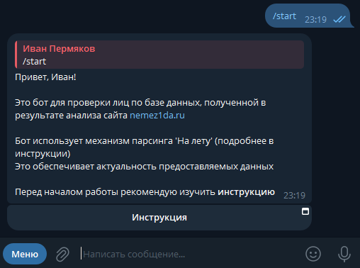
/help — Вывести справку
Так же базовый хендлер, предоставляет краткую информацию о других хендлерах и дает возможность изучить
инструкцию.
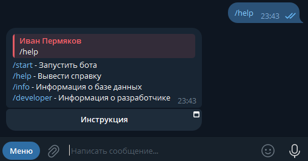
/info — Информация о базе данных
Тут предоставлена информация о текущем состоянии базы данных: ее дата последнего обновления,
количество успешных записей и общее количество имеющихся записей на сайте на момент последнего парсинга.
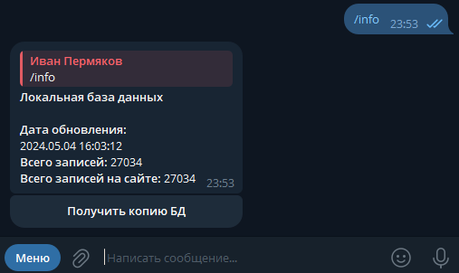
Так же имеется возможность получить копию базы данных посредством нажатия на соответствующую кнопку.
Будет отправлен файл в формате *.sql.
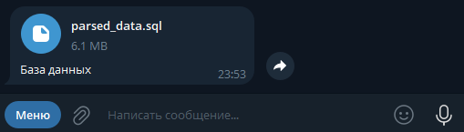
/developer — Информация о разработчике
На правах рекламы. Данный хендлер дает информацию обо мне для быстрой обратной связи в случае возникновения
каких-либо сбоев, сообщение содержит ссылки
на мои соцсети, а так же на настоящую инструкцию
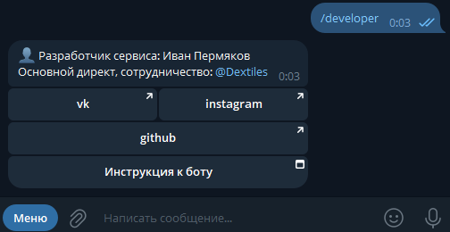
Режимы
Вся логика работы существует только в двух вариациях:
Сетевой режим:
В этом режиме бот анализирует есть ли доступ к сайту, после чего строит прямой запрос через особый
конструктор и обрабатывает подобный результат. Так называемый механизм парсинга
«На лету».
Автономный режим:
В случае неработоспособности сайта информация по вашему запросу будет предоставлена из последней
полученной версии базы данных.
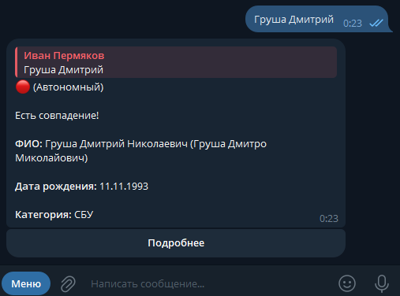
Текущий режим работы будет отображен в первой строчке сообщения:
🟢 — Сетевой
🔴 — Автономный
Поиск
Чтобы сделать запрос необходимо просто прописать установочные данные и отправить в качестве сообщения.
Однако стоит руководствоваться следующими правилами:
Доступен поиск как по ФИО, так и по ФИО и дате рождения. При формировании запроса с датой рождения
необходимо отделять ФИО и дату запятой.
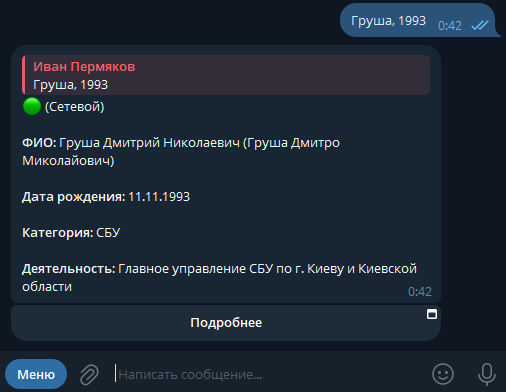
Или так...
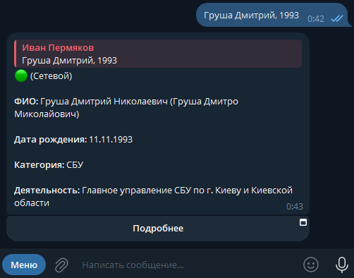
В качестве даты рождения указывайте только год, иначе получите соответствующее сообщение с ошибкой. Это
связано с наличием у некоторых лиц только года рождения,
полный запрос по дате в таком случае может не выдать совпадений.
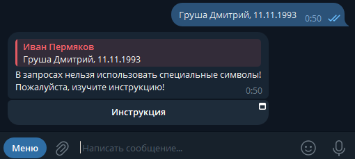
Не рекомендуется выполнять поиск сразу по ФИО и дате, так так есть случае отсутствия поля с датой у
некоторых лиц вообще, сперва стоит выполнить поиск по ФИО, и, в
случае множества совпадений уже уточнять запрос датой рождения.
Если будет несколько совпадений (меньше 15), бот предложит показать их все. После нажатия на кнопку будут
отправлены сообщения со всеми совпадениями
При несоблюдении правил и рекомендаций, вы рискуете получить отрицательный результат, при имеющихся записях
в базе данных и/или на сайте. Настоятельно рекомендую
выполнять поиск сначала по фамилии, а потом уже добавлять год.
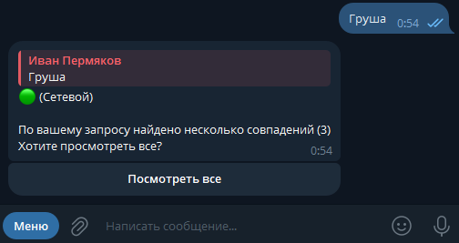
Подробную же информацию можно просмотреть нажав на соответствующую кнопку. Информация будет открыта на сайте
в онлайн-режиме, либо оправиться в качестве сообщения
в автономном режиме. В обоих случаях принципы схожи.
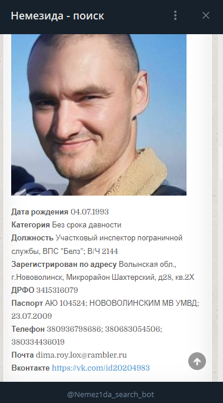
Если запрос выдал слишком много результатов, бот уведомит Вас об этом следующим сообщением.
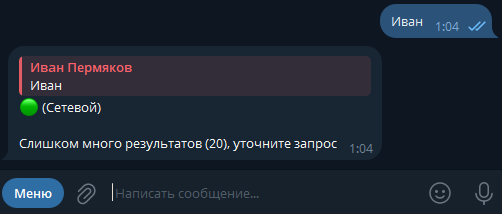
Если же сообщений не будет совсем, об этом так же станет известно.